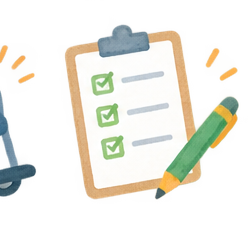

こんなとき
- 定期購入を解約したい
- 身に覚えのない請求がある
- 訪問販売や電話勧誘で契約した
- 悪質商法かもしれない
契約の解約、借金、相続・遺言、財産管理、成年後見、離婚などは、内容によって相談先が異なります。困っていることに近い項目から確認してください。

商品やサービスの契約トラブルは、消費生活相談が主な入口です。
まず生活・家計の状況を整理し、法律的な対応が必要な場合は専門相談へつなぎます。
市民相談などで入口を確認し、内容に応じて法テラス、弁護士、司法書士などの専門家へつなぎます。
高齢者の場合は地域包括支援センターなどに相談し、本人の状況に応じて権利擁護や法的な支援が必要かを考えます。
成年後見制度は、判断能力が十分でない人の権利や財産を法的に支える制度です。ただし、困りごとの内容によっては、ほかの支援が適している場合もあります。
市民相談や女性相談などから、必要に応じて法律相談につなぎます。
困りごとが複数重なっている場合や、「これは法律の問題なのか、生活の問題なのか分からない」という場合もあります。まず身近な相談窓口で状況を整理する方法があります。